Zendodo Party Zendodo 派对 (https://zendodo.io) 是 WAX 区块链上的游戏/NFT-fi，让英雄有机会将 Zendodos 聚集到他们的派对中，同时获得丰厚的回报。 Zendodos 是我们在 Dodoland 中的可爱小动物，随着英雄的进化
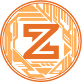 Zodium Zodium 是一个基于动画 3D 角色 NFT 的“Play to Earn”项目，由 LINE FRIENDs 的前联合创始人及其成员创建。 12生肖和12个星座的古老东方传说是Zodium的基
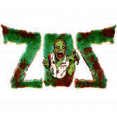 Zombie Outbreak Survival ZOS 是一款基于 WAX 区块链的战略性资源管理 MMORPG。 Nitel 镇是世界末日病毒爆发的归零地，控制幸存者在后世界末日的世界中清除、战斗并最终重建。 ZOS 融合
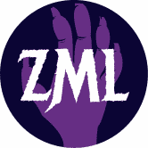 ZomLand ZomLand 是一款交互式 NFT 和 Play-to-Earn 收藏游戏，具有令人兴奋的游戏玩法和很多乐趣。你扮演僵尸和怪物军队的领袖角色，与世界各地的其他用户战斗并实现你的目标。 游戏
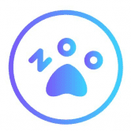 ZOO - Crypto World 加入 Free&Play 赚取 ZOO Dapp是一套智能合约，包括YIELD FARMING/Smart Pool/NFT Cards Collection/NFT Battle。 更多详情请参阅我们的文件 ZOO Crypto World 通过游戏化 DeFi 正在彻底改变 GameFi 空间。与你的
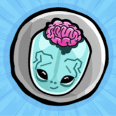 Zoombies NFT World Zoombies 是建立在稀有度、稀缺性和社区基础上的 NFT 收藏集换式卡的无限世界。Zoombies World 将区块链 NFT 的所有价值和兴奋融入到可预测规则的整洁免费组合中
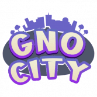 GNO City GNO City 是一款允许玩家升级他们的 NFT 并建立他们的元节生活方式的游戏。 通过升级来增加您的 NFT 收藏。 去对抗城里的人。 获得诸如 GNOKEN、经验和其他物品
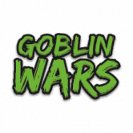 Goblin Wars 向大酋长致敬！ 欢迎来到地精战争！ #BSC 区块链上的#play2earn #NftGaming 游戏！ Goblin Wars 是一款策略、任务导向的游戏，具有生动的经济，灵感来自老式 RPG 和游戏
Gods and Legends GNL 是一个成功的 NFT 集合，在多个区块链上得到验证。 WAX 区块链上的顶级多功能集合之一，共有 9 万多个社交媒体关注者。 在短短 9 个月内，它已售出超过 10 万本
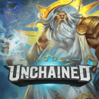 Gods Unchained Gods Unchained 是区块链上的 AAA 级游戏，由 Coinbase 等投资者提供支持。 第一季独家卡牌销售现已上线 - 立即拆箱。荣幸和你们见面;我是 Fletch，Gods Unchained 的电子竞技
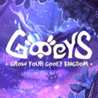 Gooeys Gooeys 是 Dogira Studios 团队的一款 Play-To-Earn 游戏，具有完全代币化的经济——从游戏中的角色到任务奖励的所有内容都完全在链上，并且可以在 OpenSea 等流行平台上进行交易。 Gooeys 由 Chainlink VRF
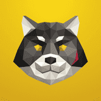 Inugami World Inugami World 是一款开放世界概念、免费玩、玩即赚 NFT 游戏，允许玩家竞争 $GAMI 奖励和 XP 积分。角色基于众所周知的模因和电影角色，使其成为同类游戏中的第一款游戏。
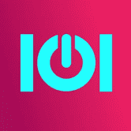 IOI-game 将有限的汽车作为 NFT 进行质押 - 玩家对玩家的游戏 - 10,000 TRX 保证奖池 - 即时奖励的冒险和锦标赛 - IOI 代币持有者的奖励池 - 为交易者和投资者提供的强大 NITRO 钱包 -
Runeguard Runeguard 是一种利用 NFT 和区块链技术力量的独特多方面游戏体验。玩家在与朋友一起探索类型丰富的 MMO 集换式卡牌游戏的同时进行交易、战斗、赚取 NFT 和代币。 玩家将
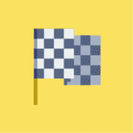 Rust Cup Game 购买独特的赛车作为 NFT。 在每个人为自己模式中寻找 1x1 比赛或 4 人比赛的对手。 每场比赛都在一个独特的赛道上进行，其特征是随机生成的。 Rustcupgame 是一款间接
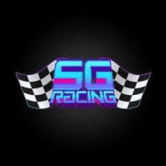 Satoshi Girl Racing NFT 拥有 NFT 可让您完全访问 Satoshi Girl 赛车游戏。 * 拥有 8 个 NFT 即可获得鲸鱼身份！ 50% 购买代币折扣！并且还可以从代币中获得 50% 以上的比特币奖励！ *通过铸造至少一个
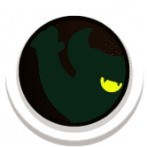 Satoshi Monsters 我们是玩防御游戏长大的，考虑到这一点，我们想创造出具有令人难以置信的游戏玩法的东西，并添加强大的区块链技术。 Satashi Monsters(SSM) 就是这样诞生的，这一切都始于
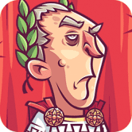 Scape Forum Scape Forum 是 Seascape Network 的第四款模块化 DeFi 游戏。在这款罗马主题的游戏中，玩家可以将 5 个更高代的 Scapes 组合成更早的一代和可能更高质量的 Scapes。获取更早更强大
Second Chance Lottery Second Chance Lotteries 是一种新型彩票，让输家有第二次获胜的机会。在这个彩票中输入不同的游戏，然后再试一次，有机会获胜。使用双重机会彩票，如果您输了彩票也没关
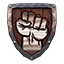 Severe Rise games Severe Rise 游戏代币作为 Severe Rise 游戏的治理和实用代币。一个代币用于多个游戏。 SRG 旨在为多个用例仅使用一个代币提供游戏元界。Severe Rise Games 由志同道合的人组
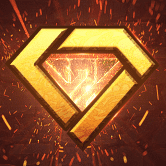 SGEM SGEMVERSE 是一个基于以太坊的多层交互式元节。玩家可以在 SGEMVERSE 中购买自己的英雄加入战斗、玩游戏以赚取代币、制作 NFT 进行交易以及与其他玩家互动。我们的代币是所
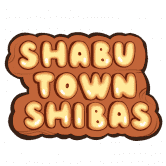 Shabu Town Shibas Shabu Town Shibas 是一款 P2E Metaverse/NFT MMORPG，玩家可以使用他们可爱的 Shibas 在 Shabu Town 中探索、战斗和赚钱！涮锅小镇作为下一代Web3.0产品开发，旨在结合社交、游戏和
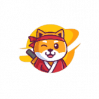 ShibaGalaxy ShibaGalaxy 是一款易于上手的 NFT 游戏，您只需要 Shiba Chest 即可上手。想帮助保卫 shibagalaxy 吗？在这里选择你的年轻 shiba，然后训练和保卫 shibagalaxy！ 选择一个
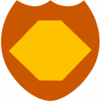 Smart Town 这是世界上第一个使用区块链技术创建的 3D 射击游戏。 它可以在计算机上的浏览器和手机 (MathWallet) 上运行。 游戏玩法非常简单明了。 要玩，您需要出现在场上（Spa
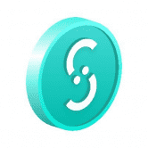 Smile Coin 游戏未来的关键 Smile Coin 正在重新构想玩家与他们最喜欢的游戏的互动方式——在我们的愿景中，障碍将不复存在。 连接 Algorand 钱包 设置好您选择的钱包后，单击右上角
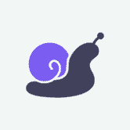 Snail Trail Game Snail Trail 是 Avalanche 网络上一款有趣且创新的赛车游戏，其中包含与赛车和繁殖有关的强大战略元素。 抓住你的蜗牛，开始你的赛车之旅，在高风险的竞技比赛或有趣的每
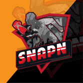 SNAPN SnapN 是一款内置 Game-Fi 和 Social-Fi 元素的 Web3 移动应用程序。享受美好生活，探索精彩世界，即可获得 Crypto/NFT 奖励，SnapN 是一款内置 Game-Fi 和 Social-Fi 元素的 Web3 移动应用程序。用户只需
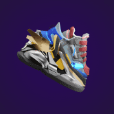 SneakersVerse 运动鞋Verse 在 SneakersVerse 中，玩家将能够作为一个团队步行或慢跑。 每个用户都可以在应用内市场购买、出售或租借运动鞋。 使命：我们的使命是激励人们用新鲜
Soldiers Land SoldiersLand 是第一款真正实用的 NFT 游戏。在这个游戏中，你可以打造你想要的士兵，装备你想要的装备，在其他游戏中使用你的 NFT 资产使其更强大，参与挑战，与你的朋